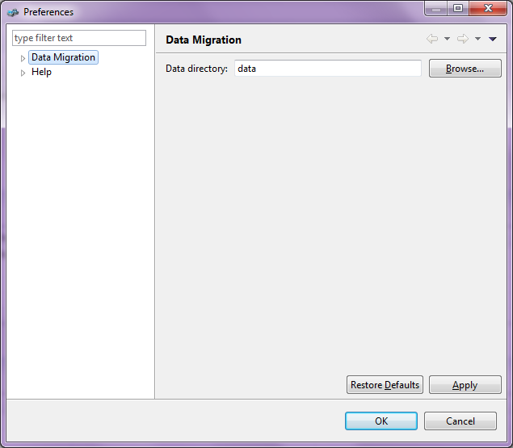
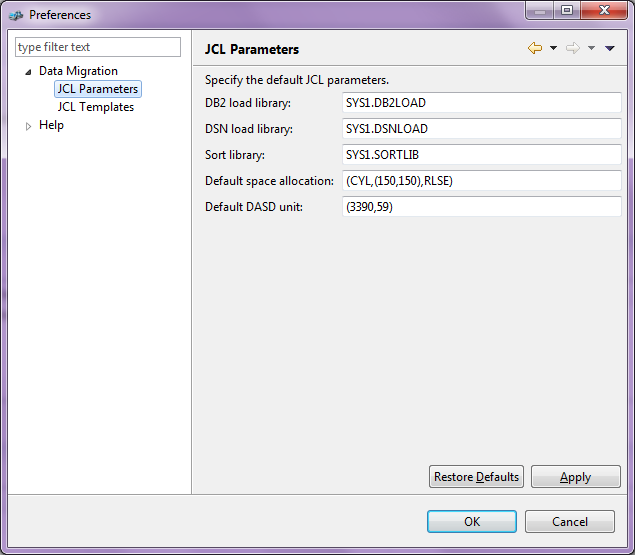
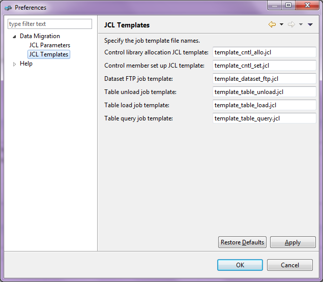

Preferences can be opened from the menu Tools -> Preferences.
In the main preference page, the data folder can be setup. The data folder is used to store the templates and temporary work files.

In the JCL Parameters preference page, the default JCL parameters can be setup. All these settings can be overrided in each server.

The template files can be found in the templates folder. The temp folder is required to store the temporary work files.
The template files can be specified in the JCL Templates preference page.

Note: There is a hsql folder in the default data folder. It is required by the hsql library which can not be moved.